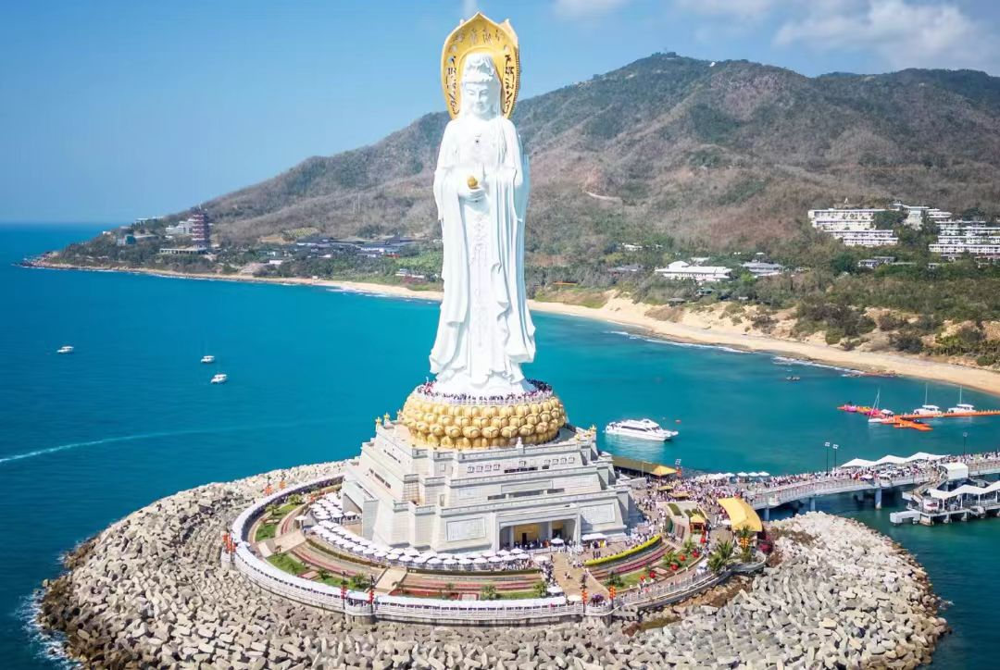

传奇：三亚南山寺位于海南省三亚市崖州区南山文化旅游区内，坐落在南山（古称"鳌山"）脚下，面朝南海，是中国最南端的佛教寺院。寺院始建于1995年，1998年建成开光，是新中国成立后新建的最大佛教道场之一。南山寺占地400亩，建筑面积约4万平方米，依山就势，错落有致，气势恢宏。寺前海中矗立着108米高的"南山海上观音"圣像，是世界上最高的观音像，与南山寺共同构成"南山观音文化苑"，成为海南重要的佛教文化圣地和旅游胜地。
核心看点：
游览攻略：
交通信息：南山寺位于三亚市崖州区南山文化旅游区。公交16路、25路、29路、55路、57路到"南山寺"站。从三亚市区乘出租车约1小时，车费约100元。从三亚凤凰国际机场乘出租车约50分钟，车费约80元。自驾可经G98海南环岛高速到南山出口。景区内有电瓶车接送。距三亚市区约40公里，车程1小时；距天涯海角约20公里，车程30分钟。建议与天涯海角、大小洞天、西岛组合游览。
历史渊源：南山与佛教有深厚渊源。据《崖州志》记载，南山古称"鳌山"，因形似巨鳌得名。唐代高僧鉴真和尚第五次东渡日本时遭遇台风，漂流至南山附近，在此居住一年有余，传播佛法。宋代，南山已有佛教活动。明代，南山建有"南山寺"（已毁）。清代，南山是海南重要的佛教圣地。民间有"福如东海，寿比南山"之说，南山被视为长寿的象征。
建寺缘起：1993年，为弘扬佛教文化，发展海南旅游，海南省政府决定在南山兴建佛教文化苑。项目得到中国佛教协会和赵朴初先生的大力支持。赵朴初先生提出"南山海上观音"的构想，认为南海是观音菩萨的道场，应在南山建观音圣像。1995年，南山寺奠基。1998年，寺院建成开光。2005年，海上观音圣像建成开光。南山寺成为海南佛教文化的标志。
规划设计：南山寺由中国佛教协会副会长、海南省佛教协会会长、南山寺方丈新成大和尚主持规划设计。寺院采用盛唐建筑风格，体现"盛世建寺"的理念。规划分为三大区域：①佛教文化区：以南山寺为核心；②观音文化区：以海上观音为核心；③生态休闲区：以南山树屋、热带园林为核心。整个规划体现了"天人合一"的思想。
建设过程：南山寺建设历时10年。①一期工程（1995-1998年）：建设南山寺主体建筑；②二期工程（1999-2005年）：建设海上观音圣像及附属设施；③三期工程（2006-2010年）：完善配套设施，建设三十三观音堂、金玉观音阁等。建设过程中，得到海内外信众的大力捐助，体现了"十方来，十方去，十方共成十方事"的佛教精神。
开光盛典：1998年4月12日，南山寺举行开光典礼。中国佛教协会会长赵朴初、副会长明旸、副会长兼秘书长净慧等佛教界高僧大德，以及海内外信众数万人参加。2005年4月24日，海上观音圣像开光。108位高僧主法，数万信众朝拜，盛况空前。开光后，南山寺成为南海地区重要的佛教活动中心。
现代发展：南山寺建成后，迅速发展。①佛教活动：每年举办观音法会、禅修营、佛学讲座等活动；②文化交流：与东南亚、日韩等佛教国家开展交流；③旅游发展：年接待游客数百万人次，成为海南重要旅游景点；④慈善事业：开展扶贫、助学、赈灾等慈善活动。南山寺是新时代佛教中国化的成功实践。
总体布局：南山寺依山面海，坐北朝南。①中轴线：不二法门→兜率内院→金堂→光明讲堂→观音殿，层层升高，象征修行次第；②东轴线：僧寮、斋堂、客堂等生活区；③西轴线：禅堂、藏经楼、法物流通处等修行区。寺院背靠南山，面向南海，形成"背有靠山，面有明堂"的风水格局。建筑与自然和谐统一，体现"天人合一"的思想。
建筑风格：南山寺采用盛唐建筑风格。①屋顶：庑殿顶、歇山顶为主，坡度平缓，出檐深远；②斗拱：用材硕大，结构严谨，既有承重功能，又起装饰作用；③色彩：以红、白、灰为主色调，朴素庄严；④装饰：简洁大气，少用繁复雕饰。盛唐风格体现了佛教的博大、包容、开放，也象征中华民族的盛世气象。
金堂（大雄宝殿）：寺院核心建筑。①规模：面阔七间（36米），进深五间（24米），高23米；②结构：重檐庑殿顶，用钢筋混凝土仿木结构；③供奉：正中供奉释迦牟尼佛（高8.8米），左文殊菩萨，右普贤菩萨；④装饰：藻井绘有飞天、莲花图案，梁枋施以彩绘。金堂是寺院举行重大法会的场所。
海上观音结构：观音圣像工程浩大。①基础：在海上填筑直径120米的人工岛（观音岛），打桩108根，象征108种烦恼；②像体：用钛合金板材拼接而成，外部喷涂白色氟碳漆，耐海水腐蚀；③内部：设电梯通达莲花宝座，宝座内为圆通宝殿；④三面：正面手持经箧，象征智慧；左面手持莲花，象征慈悲；右面手持念珠，象征和平。圣像设计科学，结构安全。
三十三观音堂：世界最大的观音群像道场。①规模：建筑面积3300平方米，唐代风格；②布局：中央为千手观音，四周环绕33尊观音应化身；③工艺：观音像用香樟木雕刻，贴金彩绘，工艺精湛；④功能：用于朝拜、禅修、法会。三十三观音堂是南山寺的特色建筑。
建筑材料：南山寺采用现代材料与传统工艺结合。①结构材料：钢筋混凝土，保证建筑安全；②装饰材料：汉白玉、花岗岩、木材、琉璃瓦；③佛像材料：铜、金、玉、香樟木；④环保材料：使用太阳能、雨水收集等环保技术。建筑材料既体现传统，又符合现代要求。
观音信仰：南山寺以观音文化为核心。①观音道场：南海是观音菩萨的应化道场，南山寺是南海观音的重要道场；②观音圣像：108米海上观音是世界最高的观音像，是观音信仰的象征；③观音法会：每年举办三次观音法会（诞辰、成道、出家），信众云集；④观音文化：开展观音文化研究、观音艺术创作、观音禅修等活动。南山寺是观音信仰的中心。
佛教活动：南山寺佛教活动丰富。①日常功课：僧众早晚课诵、过堂用斋；②法会活动：佛诞、观音诞、孟兰盆会、水陆法会等；③禅修活动：举办禅七、佛七、精进禅修营；④讲经说法：高僧大德讲经，信众听经闻法；⑤佛教教育：举办佛学班、居士培训班。南山寺是南海地区佛教活动的重要场所。
素食文化：南山寺素食独具特色。①南山素斋：采用海南本地食材，制作精美，色香味俱佳；②饮食理念：提倡"斋心为本，素食养生"，通过饮食修行；③素斋体验：游客可在寺院用斋，体验佛教饮食文化；④素食研究：研究素食与健康、环保的关系。南山素斋是海南特色素食品牌。
禅修体验：南山寺提供多种禅修体验。①短期禅修：一日禅、周末禅、禅七等；②禅修项目：坐禅、行禅、茶禅、书法禅等；③禅修环境：南山树屋、海边禅堂、山林步道等禅修场所；④禅修指导：有法师指导，适合初学者。禅修体验帮助人们缓解压力，提升心灵。
佛教艺术：南山寺是佛教艺术的宝库。①造像艺术：金玉观音、三十三观音、海上观音等，艺术价值高；②建筑艺术：盛唐风格建筑，宏伟庄严；③书画艺术：收藏佛教书画作品；④音乐艺术：佛教音乐、梵呗演唱。南山寺定期举办佛教艺术展览。
文化交流：南山寺积极开展佛教文化交流。①国内交流：与大陆、港澳台佛教界交流；②国际交流：与东南亚、日韩、欧美佛教界交流；③学术交流：举办佛教文化研讨会；④旅游交流：通过旅游传播佛教文化。南山寺是佛教文化交流的窗口。
宗教价值：南山寺是南海地区重要的佛教道场。①信仰中心：是海南及南海地区信众朝拜的中心；②修行道场：为僧众提供清净的修行环境；③教育中心：开展佛教教育，培养僧才；④文化交流：促进佛教文化交流。南山寺在佛教界具有重要地位。
文化价值：南山寺是海南文化的重要载体。①佛教文化：传承中国佛教文化，特别是观音文化；②建筑文化：盛唐建筑风格，体现传统建筑艺术；③艺术文化：佛教造像、书画、音乐等艺术形式；④生态文化：建筑与自然和谐，体现生态理念。南山寺是海南文化的"金字招牌"。
旅游价值：南山寺是海南最重要的旅游景点之一。①景观价值：海上观音、南山寺建筑、热带风光构成独特景观；②体验价值：佛教体验、禅修体验、素食体验等；③经济价值：年接待游客数百万人次，带动旅游经济发展；④品牌价值："南山观音"成为海南旅游的重要品牌。南山寺是海南旅游的"必游之地"。
社会价值：南山寺在社会生活中发挥重要作用。①精神寄托：为信众提供精神家园；②道德教化：通过佛教教义教化人心，促进社会和谐；③慈善公益：开展扶贫、助学、赈灾等慈善活动；④社区服务：为当地社区提供文化、教育、卫生等服务。南山寺是社会的"稳定器"。
生态价值：南山寺注重生态保护。①选址：依山就势，保护原有植被；②建筑：采用环保材料，减少污染；③能源：使用太阳能等清洁能源；④管理：实行垃圾分类，保护海洋环境。南山寺是"生态寺院"的典范。
保护与传承：南山寺得到科学保护。①法律保护：作为宗教活动场所，受法律保护；②规划保护：编制保护规划，合理控制游客数量；③日常维护：定期检查维修，保持建筑安全；④文化传承：开展佛教教育，培养僧才，传承佛教文化；⑤合理利用：发展文化旅游，让佛教文化"活"起来；⑥社区参与：与当地社区合作，共同保护。南山寺的保护经验，为现代寺院建设提供了借鉴。